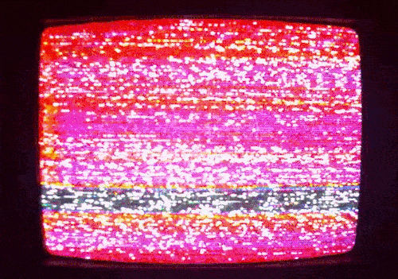

The most intelligent inhabitants of that future world won't be men or monkeys, they'll be machines. The remote descendants of today's computers. Now, the present day electronic brains are complete morons. But this will not be true in another generation. They will start to think, and eventually they will completely outthink their makers. Is this depressing? I don't see why it should be. We superseded the Cro-Magnon and Neanderthal men, and we presume we're an improvement. I think we should regard it as a privilege to be stepping stones to higher things. I suspect that organic or biological evolution has about come to its end and we're now at the beginning of inorganic or mechanical evolution which will be thousands of times swifter. But even if the future does belong to the robots, our bodies and our brains still have immense untapped potentialities. For example, to cope with the information explosion, we may develop a machine for recording information directly onto the brain, as today we can record a symphony on tape. So we may one day be able to become instant experts, learning Chinese overnight for example. Or we may be able to recall completely memories of past events so that we seem to relive them. In fact, techniques already known for doing this in a rather limited way at the present. Alternatively, we may prefer to totally erase past unpleasant memories.

Bem-vindo
"Não em crueldade / não em ira /
O ceifador chegou naquele dia.
Um anjo visitou a terra viva /
e levou as flores em sua companhia"